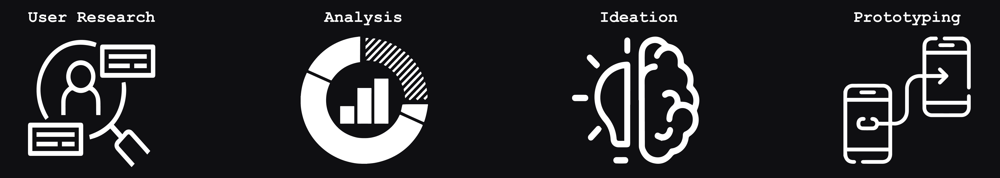

Friends to the Forlorn
Friends to the Forlorn is a non-profit organization located in Dallas, Georgia, dedicated to finding and taking care of pit-bulls.
Tanvir Patwary - UX Designer
Yasmeen Santillan - UX Designer
Camilo Sarmiento - UX Designer
Tha Vin - UX Designer
About the Project
Our primary objective is to revamp the digital presence of Friends to the Forlorn, a non-profit organization based in Dallas, Georgia. At Friends to the Forlorn, the team advocates for pit bull ownership and facilitates their adoption into loving and caring homes. Our ultimate goal is to drive increased traffic and engagement by revamping the website. We envision a brighter and more inviting layout that attracts visitors and conveys the heartwarming stories of pit bulls and their transformative journeys. With our mobile app design, we seek to extend the organization's reach and impact, ensuring that potential adopters and supporters can connect with Friends to the Forlorn conveniently on their smartphones.
Methodology
To ensure a solid foundation for our work with Friends to the Forlorn, we adopted a methodology of beginning with a stakeholder interview. By engaging in open and insightful conversations, we gained a deeper understanding of user behavior—when they visit the website, how frequently, and the common actions they undertake. Next, we turned our attention to the competitive area surrounding Dallas, identifying the organizations operating within Friends to the Forlorn. As a group, we conducted brainstorming sessions, where innovative ideas prospered. Our collective aim was to identify small yet impactful changes that would streamline the website and optimize our mobile design.
User Research
Stakeholder Interview
Our stakeholder interview revealed valuable insights that shaped our understanding of Friends to the Forlorn's user base and their preferences. One key finding was that the primary reason for website visits revolved around adoption, with users actively seeking opportunities to provide loving homes for pit bulls. We also discovered that a significant portion of donations were facilitated through the Facebook platform. Our research also revealed the geographical distribution of website visitors, with the majority hailing from Atlanta, Georgia. Recognizing the significance of social media in connecting with their user base, we acknowledge the importance of fostering communication and engagement through these channels. Integrating social media feeds, sharing options, and interactive elements within the digital platforms would provide users with a seamless and cohesive experience while expanding Friends to the Forlorn's reach and impact.
Competitive Analysis
Following the stakeholder interview, we conducted a comprehensive competitor analysis to gain a deeper understanding of the landscape in which Friends to the Forlorn operates. Our analysis revealed two prominent competitors: LifeLine Animal Project and Golden Retriever Rescue of Atlanta. By thoroughly examining these competitors, we gained valuable insights into their strengths, weaknesses, and strategies. This knowledge served as a foundation for developing a compelling and distinctive digital experience for Friends to the Forlorn, ensuring their offerings stand out in the competitive zone.
Ideation & Development
Develop
Transitioning into the development phase, our team embarks on crafting the wireframes and low-fidelity prototypes for both the website and mobile app designs. These early-stage visual representations provided a solid foundation for the subsequent design iterations. Simultaneously, we dedicated attention to creating a sitemap. By optimizing the sitemap, we aimed to reduce clutter, enhance user experience, and ensure a logical and intuitive information architecture.
User Testing
We conduct user tests to assess the visibility and accessibility of both the website and mobile app designs. With a total of three tests administered, each participant was assigned three tasks to complete. The overall results of the tests were promising, indicating a successful user experience. However, we did encounter an issue where one user faced difficulty locating the volunteer application on the website. This valuable feedback presented our group with an opportunity to address the problem and devise an effective solution. We evaluated various potential solutions, considering factors such as improving the prominence of the volunteer application, optimizing navigation, and enhancing the clarity of information related to volunteering. By fine-tuning the design elements, adjusting the information architecture, and providing clear navigation cues, we aimed to alleviate any frustrations and enable seamless access to the volunteer application.
High-Fidelity Prototype
Following the valuable feedback from user tests, our focus shifted toward refining the prototype into a high-fidelity design. Through careful consideration of typography, color palette, and symbolism, we developed a new logo that captures the essence of the organization while aligning with the updated visual style. Our aim was to create a visually appealing and impactful logo that accurately represents the organization's mission and resonates with its target audience. Throughout this process, our team paid close attention to the balance between refreshing the design and preserving the core elements that users already associate with Friends to the Forlorn. By incorporating the updated logo, refined visual style, and preserving familiar design elements, we aimed to create a high-fidelity prototype that not only captures the attention but also fosters trust and familiarity among users.

Conclusion
The stakeholder interview proved to be a pivotal moment in our design process, opening up numerous opportunities for us to create an improved and impactful design. Building upon the insights gained from the interview, we were able to develop a design that successfully passed the user testing phase. As we move forward, it's important to acknowledge that even successful designs can benefit from minor tweaks to further enhance their appeal and efficiency. We strive to make continuous enhancements, addressing user feedback, and incorporating industry best practices to create a final design that is both visually appealing and highly efficient.